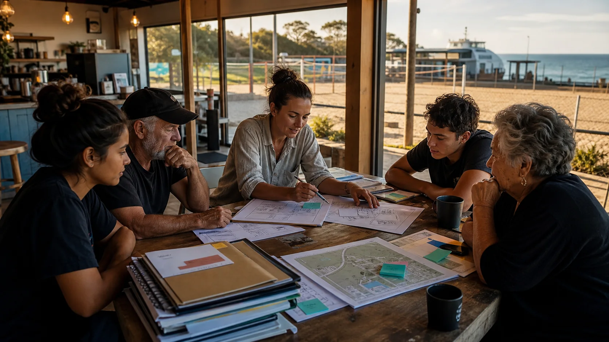

9 Ballow Road: Ready S.E.T. Co-op
Public trust-hub proposal: local help, training, media, noticeboards, bookings, grant paperwork and small paid tasks.

Funding and governance
This is not a $41M ferry add-on and it is not an Olympic bid. It is a nearby public-use idea that can ride those bigger currents carefully: sand sport, notices, markets, screen nights, local jobs and updates people can actually check.
Start where work can begin
9 Ballow Road is the public Ready S.E.T. Co-op Trust Hub proposal: a front desk, training room, hyperlocal media desk, grant table and noticeboard crew. It gives the work somewhere to answer questions, onboard helpers, publish updates and keep records.
10-12 Ballow Road is the possible sports and culture hub beside QUAMPI: sand sport, screen nights, markets, visitor welcome and bay-side events if site control, slope, access, toilets, storage, neighbours and layout all stack up.
That order turns the ferry upgrade and 2032 into leverage, not loose slogans. Start with a working co-op base, prove visible public activity, then bigger funding has something real to back.
Public trust-hub proposal: local help, training, media, noticeboards, bookings, grant paperwork and small paid tasks.
Possible sand courts, screen nights, markets, visitor orientation, shade, storage, toilets and a public notice rhythm people can see.
Attendance, club use, visitor spend, youth shifts, volunteer hours, maintenance costs, clean pack-downs and local feedback become the evidence.
Plain public updates
Money follows confidence. Confidence grows when people can see the small steps: what is proposed, where it sits, who it affects, what changed this week and what still needs checking.
That matters because three big stories meet here without becoming the same thing. The Junner Street ferry upgrade is public infrastructure. The 2032 Olympics can create a useful sand-sport legacy. The Ballow Road ideas are local proposals that need proof, partners and operating discipline before they ask for bigger money.
A modern noticeboard turns those moving parts into a public trail. It can show grant windows, quote requests, sponsor calls, club fundraisers, ferry impacts, weather changes, market places and small paid tasks in plain language. People can join the part they understand instead of needing the whole backstory first.
Governance
The public page can stay plain. The formal work still has to answer entity fit, insurance, tax, leases, child safety, cultural governance, financial reporting and who is actually responsible.
Applicant, auspice partner, committee, co-op lane or council/community partner.
Country, cultural programming, language, story and filming need the right relationships.
Public grants, sponsorship, earned income, donations, volunteer effort and in-kind support.
Events, food, alcohol, weather, first aid, children, crowd flow and incident reporting.
Grant readiness
The public story can come from real movement: attendance, transport issues, weather calls, partner notes, quote requests, letters of support, risk controls and what changed because locals said something useful.
That makes the grant pack less like a glossy wish list and more like a working log. A funder can see what was tried, who turned up, what failed, what was fixed and which local groups are ready to carry the next step.
Grant windows, project profiles, source docs and readiness workflows.
Public update patterns for projects, proposals, local entities, events, weather calls and corrections.
Legal-information notes, source trails and risk maps for qualified review.